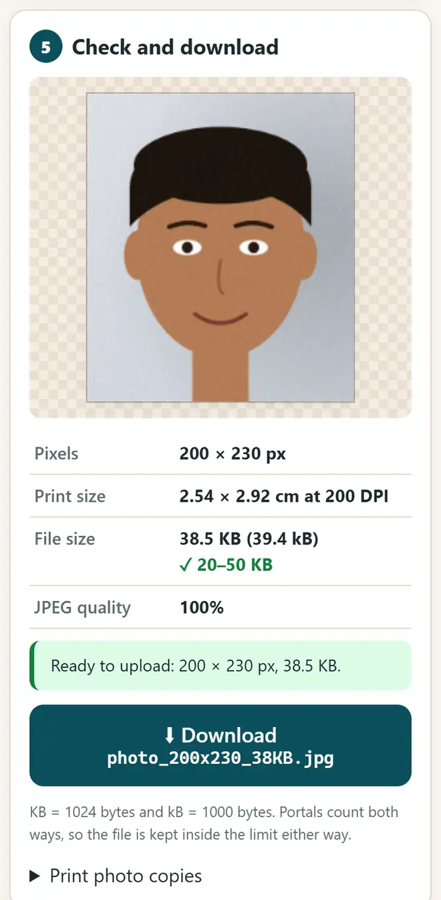

امتحان اور نوکری کے فارم کے لیے فوٹو اور دستخط کا سائز کیسے ٹھیک کریں
فوٹو یا دستخط چند KB بڑا، چھوٹا یا غلط شکل کا ہو تو آن لائن فارم اسے لوٹا دیتا ہے۔ یہاں دیکھیں کہ کسی ویب سائٹ پر بھیجے بغیر، فون پر ہی دونوں کو فارم کے اصولوں کے مطابق کیسے بنایا جائے۔
مختصر جواب
فارم فوٹو اور دستخط ری سائزر کھولیں، “فوٹو” یا “دستخط” دبائیں، اپنا امتحان یا فارم چنیں اور تصویر شامل کریں۔ اسے فریم کے اندر کھسکا کر اور زوم کر کے ٹھیک بٹھائیں، پھر “ڈاؤن لوڈ” دبائیں۔ فائل دکھائی گئی KB حد کے اندر ہی بنتی ہے۔ نمبر ہمیشہ اپنے سرکاری نوٹس سے ملائیں۔
5 قدم میں فوٹو اور دستخط تیار
-
چنیں کہ کیا اپ لوڈ کرنا ہے
فارم فوٹو اور دستخط ری سائزر کھولیں اور “فوٹو”، “دستخط”، “انگوٹھے کا نشان” یا “اقرار نامہ” دبائیں۔
-
اپنا امتحان یا فارم چنیں
فہرست میں سے چنیں: بینک (IBPS، SBI)، UPSC، SSC، ریلوے (RRB)، NEET، PAN کارڈ، ڈرائیونگ لائسنس یا کوئی عام سائز۔ “فارم کیا مانگتا ہے” والے خانے میں پکسل، KB اور DPI نظر آتے ہیں۔ آپ کے نوٹس میں کچھ اور لکھا ہو تو “سائز اور KB بدلیں” دبا کر وہی نمبر لکھیں۔

فارم چنیں: ایپ پکسل، KB اور DPI دکھا دیتی ہے۔ -
تصویر شامل کریں اور کراپ ٹھیک کریں
“تصویر چنیں” یا “کیمرا” دبائیں۔ تصویر کو کھسکائیں اور زوم کریں، یہاں تک کہ چہرہ بیضوی گائیڈ کے اندر آ جائے۔ دستخط کے لیے “سیاہی تک آٹو کراپ” دبائیں، اس سے آس پاس کا خالی کاغذ کٹ جاتا ہے۔
-
صاف اور واضح بنائیں
ضرورت ہو تو برائٹنس اور کنٹراسٹ بدلیں۔ “پس منظر سفید کریں” سادہ ہلکی دیوار کو صاف سفید کر دیتا ہے۔ دستخط میں ایپ سایہ اور کاغذ کا رنگ ہٹا دیتی ہے۔
-
جانچیں اور ڈاؤن لوڈ کریں
نتیجے میں پکسل اور فائل کا سائز نظر آتا ہے، اور فائل اپ لوڈ کے لیے تیار ہو تو ایپ بتا دیتی ہے۔ “ڈاؤن لوڈ” دبائیں اور وہی فائل فارم میں اپ لوڈ کریں۔ اپنی اصل فوٹو بھی سنبھال کر رکھیں۔

تیار فائل، اس کے پکسل اور KB کے ساتھ۔
فوٹو مسترد نہ ہو، اس کے لیے مشورے
- فوٹو: دن کی روشنی میں سادہ سفید یا ہلکی دیوار کے سامنے کھڑے ہو کر سیدھا کیمرے کی طرف دیکھیں۔ ٹوپی یا کالا چشمہ نہ پہنیں۔
- دستخط: سادہ سفید کاغذ پر اسی رنگ کی روشنائی سے کریں جو فارم مانگتا ہے (عام طور پر کالی)۔ فوٹو بالکل اوپر سے لیں اور اپنا سایہ نہ پڑنے دیں۔
- کچھ فارم اب فوٹو کیمرے سے لائیو لیتے ہیں اور صرف دستخط اپ لوڈ کرواتے ہیں۔ پہلے نوٹس پڑھ لیں۔
- سائز ہر فارم میں اور ہر سال بدلتے ہیں۔ ایپ کے سائز صرف شروعات کے لیے ہیں؛ آخری بات آپ کے امتحان کا سرکاری نوٹس ہی ہے۔ دستاویز کی چھوٹی PDF چاہیے تو PDF کمپریس اور JPG سے PDF استعمال کریں۔
نئے مفت ٹولز اور ہندی میں AI کے اسباق پائیں
ہماری ای میل فہرست میں شامل ہوں: نئی مفت ایپس، نئی گائیڈز اور AI پر ہندی ویڈیو اسباق کی خبر آپ کو ملتی رہے گی۔ کوئی اسپام نہیں۔
صرف بالغوں (18+) کے لیے۔ آپ کبھی بھی اپنا نام ہٹوا سکتے ہیں۔
ہم یہ ٹولز کیوں تجویز کرتے ہیں
- سب کے لیے مفت: نہ اشتہار، نہ سائن اپ، نہ کوئی پیڈ پلان۔
- نجی: آپ کی فائلیں اور معلومات آپ کے اپنے آلے پر ہی رہتی ہیں۔
- فون، لیپ ٹاپ یا اسمارٹ بورڈ پر چلتے ہیں، اور ایک بار کھلنے کے بعد انٹرنیٹ کے بغیر بھی۔
- اردو اور ہندی سمیت 12 زبانوں میں۔
ویڈیو سے سیکھنا پسند ہے؟ ہمارے YouTube چینل پر AI اور مفت ٹولز کے ہندی اسباق دیکھیں۔
اکثر پوچھے جانے والے سوالات
SSC، UPSC یا بینک کے فارم میں فوٹو اور دستخط کا سائز کتنا ہونا چاہیے؟
یہ فارم اور سال پر منحصر ہے، اس لیے ایک ہی جواب نہیں ہے۔ ایپ ہر امتحان کے عام طور پر مانگے جانے والے سائز بھر دیتی ہے اور بتاتی ہے کہ انہیں آخری بار کب جانچا گیا، لیکن آپ کو انہیں اپنے سرکاری نوٹس سے ملانا ہی ہے۔ فرق ہو تو “سائز اور KB بدلیں” سے بدل لیں۔
فوٹو کو 20 KB سے 50 KB کے درمیان کیسے کریں؟
ایسا فارم چنیں جس کی یہی حد ہو، یا “اپنا سائز” چن کر اپنے نوٹس سے چوڑائی، اونچائی اور KB لکھیں۔ ایپ حد کے اندر آنے والی سب سے اچھی کوالٹی چن لیتی ہے۔
کیا میری فوٹو کہیں اپ لوڈ ہوتی ہے؟
نہیں۔ سارا کام آپ کے براؤزر کے اندر ہوتا ہے، اس لیے فوٹو اور دستخط آپ کے آلے سے باہر نہیں جاتے۔ سائبر کیفے میں بھی یہ محفوظ ہے: اگلے شخص کے لیے کچھ بھی محفوظ نہیں رہتا۔
میری فائل کم از کم KB سے چھوٹی بن رہی ہے۔ اب کیا کروں؟
ایپ اسے خود سنبھال لیتی ہے۔ اگر سب سے اچھی کوالٹی پر بھی فائل کم از کم سے چھوٹی رہے، تو وہ فائل کے اندر ایک بے ضرر نوٹ جوڑ دیتی ہے، جس سے سائز کم از کم تک پہنچ جاتا ہے۔ تصویر ویسی ہی نظر آتی ہے اور معمول کے مطابق کھلتی ہے۔
کیا میں پاسپورٹ سائز فوٹو پرنٹ کر سکتا ہوں؟
جی ہاں۔ نتیجے کے نیچے “فوٹو کی کاپیاں پرنٹ کریں” کھولیں، کاپیوں کی تعداد چنیں اور اصل سائز (100%) پر پرنٹ کریں۔
کام کی لگی؟
کسی دوست، ساتھیوں یا اپنے اسکول کے WhatsApp گروپ میں بھیجیں۔